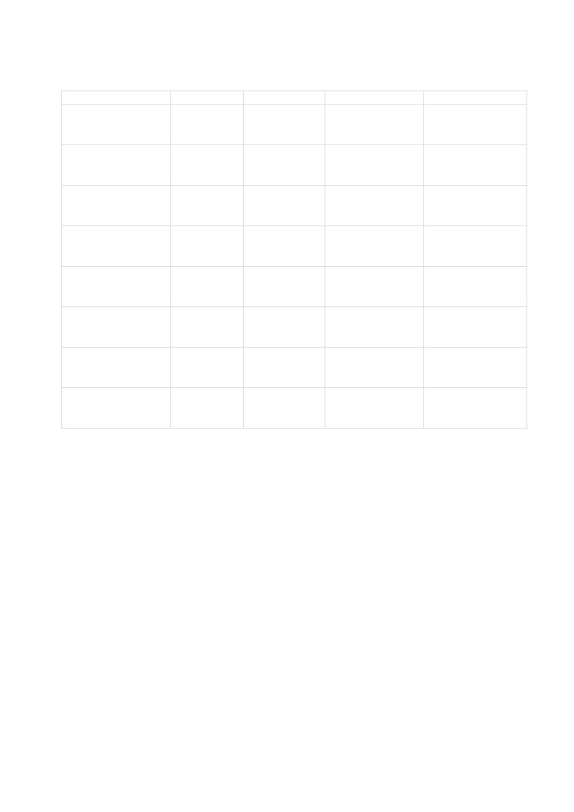

PLAN DE CAPACITACION PARA USUARIOS
FINALES DEL PORTAL ADMINISTRATIVO
INSTITUCIONAL (INAP)
PROCESO DE CAPACITACION A USUARIOS FINALES
El plan de capacitación se realiza mediante unos pasos los cuales guiaran e
informaran al usuario final, un factor de gran importancia es que no se debe de
omitir la capacitación, como un hecho que se da una sola vez para cumplir con
un requisito. La mejor forma de capacitar es la que se obtiene de un proceso
continuo, siempre buscando conocimientos y habilidades para estar al día.
Este proceso tiene pasos a seguir para lograr el éxito:
1. Analizar las necesidades. Identificar habilidades y necesidades de los
conocimientos y desempeño.
2. Diseñar la forma de enseñanza: Aquí se elabora el contenido del
programa.
3. Validación: Aquí se eliminan los defectos del programa y se presenta solo
a unos cuantos pero que sean representativos.
4. Aplicación: Aquí se aplica el programa de capacitación.
5. Evaluación: se determina el éxito o fracaso del programa.
Justificación
El presente plan se sustenta en el marco de la ejecución del proyecto portal
administrativo institucional para el Instituto Nacional de la Palma Chalatenango,
que ofrece una solución académica para alumnos y docentes a favor del sistema
educativo y su desempeño.
El proyecto ha presentado la no relación que tiene el alumno y docente en el
área sistemática funcional del software por lo que nace como necesidad la
capacitación de los usuarios finales del portal administrativo.
Objetivo
Generar capacidades en los docentes y alumnos en el uso de las nuevas TICs y
en fortalecer sus capacidades para interactuar con el sistema administrativo, con
la finalidad de optimizar procesos.

ESTRUCTURA DEL PLAN DE CAPACITACION
TEMA
DURACION
MODALIDAD
FACILITADOR
PARTICIPANTES
1. Introducción
1 Hora
Presencial
Lic. Juan Carlos
Oscar Mauricio
Galdámez,
coordinador CRA
2.Descripcion de
1 Hora
Presencial
Lic. Juan Carlos
Oscar Mauricio
módulos
Galdámez,
coordinador CRA
3.Inicio de sesión
1 Hora
Presencial
Lic. Juan Carlos
Oscar Mauricio
Galdámez,
coordinador CRA
4.Gestion de
30 Minutos
Presencial
Lic. Juan Carlos
Oscar Mauricio
Cuentas
Galdámez,
coordinador CRA
5.Gestion de
30 Minutos
Presencial
Lic. Juan Carlos
Oscar Mauricio
Usuarios
Galdámez,
coordinador CRA
6.Operaciones del
1 Hora con
Presencial
Lic. Juan Carlos
Oscar Mauricio
Sistema
30 minutos
Galdámez,
coordinador CRA
7.Consultas del
20 Minutos
Presencial
Lic. Juan Carlos
Oscar Mauricio
sistema
Galdámez,
coordinador CRA
8.Gestor
1 Hora con
Presencial
Lic. Juan Carlos
Oscar Mauricio
Administrativo
30 minutos
Galdámez,
coordinador CRA
Descripción de módulos:
Espacio en el cual se llevará a cabo la introducción y descripción de cada uno
de los módulos con los que cuenta el portal administrativo institucional
resolviendo todas y cada duda que se presenten acerca de los módulos este
proceso se le dará al encargado del CRA con especialidad en asistencia
informática/ e infraestructura en redes y telecomunicación.
Inicio de sesión:
Proceso diseñado para ingresar al sistema por medio de un código Carnet o
DUI y usuario, los ingresos al sistema serán controlados por medio de perfiles
los cuales tendrán ciertas restricciones para realizar acciones en el sistema.
Gestión de cuentas:
Proceso diseñado para crear y manejar módulos que se crearan en el sistema.
Gestión de Usuarios:
Proceso en el cual fue diseñado para la creación, edición y eliminación de
usuarios y perfiles dentro del sistema.
Operación del sistema:
Proceso desarrollado para explicar la funcionalidad total de procesos que tiene
el sistema.
Consultas del Sistema:
Proceso desarrollado para explicar los reportes que generara el sistema como
resultado final.
Gestor de administración:
Proceso desarrollado para el administrador del sistema para realizar
modificaciones en el área de activar y desactivar usuarios.
Ejecución:
La ejecución del plan se llevará a cabo en el aula del coordinador del CRA donde
será presentado el plan de capacitación el día 5 de noviembre del 2018.
Evaluación:
La evaluación del plan de capacitación se realizará por medio de una constancia
final en la cual la institución debe hacer constar que el Licenciado Juan Carlos
actualmente graduado en sistemas informáticos.